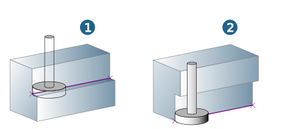

Contours
Specify the path of the T-Slot using contours. A separate contour is required for each side to machine a complete slot. The contours must be planar and can be closed.
Contour selection
| Select contours. The number of selected contours is displayed. For further information on selecting contours, see section Contours. |

Geometry
Define geometry parameters.
Enter the Top (1) and Bottom (2) parameters. For information on definition, see section Contours.
Optionally define a Start point (3). Set an End point (4) if the contour is to be machined only partially or if there should be an overlap. To do so, enable the Start point / End point option and select a point or a position on the contour.
Width (1): Enter the width of the infeed area for each defined contour.
Use Max. lateral step (2) on the Parameters dialog page to enter the maximum permissible distance for the infeed in the XY direction to the next path.
 |
Reverse: In the default setting the machining direction follows the direction of the selected contour. This can be seen in the graphic preview. If the calculation does not result in the intended machining direction, select the relevant contours and select the Reverse option.
Open top (1): The slot is open to the top. A finishing cut in the upper area of the slot is omitted.
Open bottom (2): The slot is open to the bottom. A finishing cut in the base of the slot is omitted.
|  |
Align closed contours: The machining direction can be reversed for all selected closed (!) contours simultaneously. To do so, select the contours and specify the direction of the contours using the Align closed contours > Clockwise / Counterclockwise function from the shortcut menu. The start point and end point are interchanged automatically.
Warning
If you change the direction, you should also change the tool position.
Connect contours: Select contours and connect them with one another using the Connect contours function from the shortcut menu. Only adjacent contours can be connected with one another.
 |
Technology
Define technology parameters.
Feedrate options
Adapt the feedrate for individual contour elements.
Center (standard): The contour is machined with the standard feedrate.
Edge control: Optimize the feedrate automatically at the edges.
Segments: Adjust the feedrate for individual contour areas (segments).
Segments
Assign a feedrate to segments of a contour.
Click the Edit segments button to open the Segments dialog.
Add through three points: Select start point, end point and a further point on the contour.
Add through curves: Select a curve. The starting point and end point are calculated automatically.
The feedrate depends on the usage and can be modified either manually or on the basis of factors.
Select segment.

Click the icon for cutting speed or feedrate.

The icon changed.
Enter the required value.
Changing on the basis of factors: Select the segment, click the link icon and enter the required factor directly.

The feedrate applies to the usage that is set on the Tool dialog page under Cutting profile.